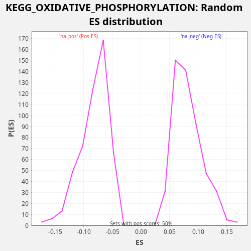

Profile of the Running ES Score & Positions of GeneSet Members on the Rank Ordered List
The same image in compressed SVG format
| Dataset | CCLE |
| Phenotype | NoPhenotypeAvailable |
| Upregulated in class | na_pos |
| GeneSet | KEGG_OXIDATIVE_PHOSPHORYLATION |
| Enrichment Score (ES) | 0.2877123 |
| Normalized Enrichment Score (NES) | 3.5008678 |
| Nominal p-value | 0.0 |
| FDR q-value | 0.0 |
| FWER p-Value | 0.0 |
| SYMBOL | RANK IN GENE LIST | RANK METRIC SCORE | RUNNING ES | CORE ENRICHMENT | |
|---|---|---|---|---|---|
| 1 | COX7B2 | 96 | 3.773 | 0.0048 | Yes |
| 2 | ATP6V0A4 | 371 | 0.269 | 0.0011 | Yes |
| 3 | MT-ND3 | 1070 | 0.009 | -0.0228 | Yes |
| 4 | NDUFA3 | 1267 | 0.005 | -0.0228 | Yes |
| 5 | COX6B1 | 1566 | 0.002 | -0.0276 | Yes |
| 6 | NDUFC2 | 1914 | 0.001 | -0.0348 | Yes |
| 7 | NDUFB3 | 2121 | 0.001 | -0.0352 | Yes |
| 8 | NDUFB8 | 2389 | 0.000 | -0.0386 | Yes |
| 9 | COX10 | 2413 | 0.000 | -0.0303 | Yes |
| 10 | UQCRB | 2438 | 0.000 | -0.0221 | Yes |
| 11 | ATP6V1A | 2597 | 0.000 | -0.0203 | Yes |
| 12 | NDUFB1 | 2894 | 0.000 | -0.0250 | Yes |
| 13 | COX6A1 | 2978 | 0.000 | -0.0196 | Yes |
| 14 | UQCRFS1 | 3150 | 0.000 | -0.0184 | Yes |
| 15 | NDUFB2 | 3205 | 0.000 | -0.0116 | Yes |
| 16 | SDHA | 3251 | 0.000 | -0.0044 | Yes |
| 17 | NDUFV2 | 3258 | 0.000 | 0.0046 | Yes |
| 18 | MT-ND2 | 3259 | 0.000 | 0.0140 | Yes |
| 19 | NDUFV3 | 3317 | 0.000 | 0.0206 | Yes |
| 20 | LHPP | 3492 | 0.000 | 0.0217 | Yes |
| 21 | ATP6V1B1 | 3638 | 0.000 | 0.0241 | Yes |
| 22 | ATP6V1H | 3784 | 0.000 | 0.0266 | Yes |
| 23 | NDUFA4L2 | 4174 | 0.000 | 0.0174 | Yes |
| 24 | TCIRG1 | 5443 | 0.000 | -0.0336 | Yes |
| 25 | NDUFAB1 | 5727 | 0.000 | -0.0377 | Yes |
| 26 | COX17 | 5929 | 0.000 | -0.0379 | Yes |
| 27 | UQCR11 | 6083 | 0.000 | -0.0359 | Yes |
| 28 | ATP6V0C | 6085 | 0.000 | -0.0266 | Yes |
| 29 | COX8A | 6108 | 0.000 | -0.0183 | Yes |
| 30 | UQCRC2 | 6201 | 0.000 | -0.0133 | Yes |
| 31 | ATP6V1G2 | 6283 | 0.000 | -0.0078 | Yes |
| 32 | NDUFB9 | 6682 | 0.000 | -0.0174 | Yes |
| 33 | MT-CYB | 6817 | 0.000 | -0.0144 | Yes |
| 34 | NDUFB5 | 6924 | 0.000 | -0.0101 | Yes |
| 35 | ATP6V1F | 7185 | 0.000 | -0.0131 | Yes |
| 36 | NDUFA2 | 7723 | 0.000 | -0.0294 | Yes |
| 37 | UQCRQ | 7738 | 0.000 | -0.0207 | Yes |
| 38 | COX7C | 7778 | 0.000 | -0.0132 | Yes |
| 39 | NDUFS7 | 7820 | 0.000 | -0.0058 | Yes |
| 40 | NDUFA1 | 7824 | 0.000 | 0.0034 | Yes |
| 41 | NDUFA6 | 7988 | 0.000 | 0.0050 | Yes |
| 42 | MT-ATP6 | 8086 | 0.000 | 0.0097 | Yes |
| 43 | ATP6V0A2 | 8106 | 0.000 | 0.0182 | Yes |
| 44 | ATP6V1D | 8170 | 0.000 | 0.0245 | Yes |
| 45 | COX15 | 8177 | 0.000 | 0.0336 | Yes |
| 46 | COX7A2L | 8191 | 0.000 | 0.0423 | Yes |
| 47 | NDUFA9 | 8287 | 0.000 | 0.0471 | Yes |
| 48 | NDUFS6 | 8292 | 0.000 | 0.0563 | Yes |
| 49 | NDUFS8 | 8445 | 0.000 | 0.0584 | Yes |
| 50 | NDUFS3 | 8461 | 0.000 | 0.0670 | Yes |
| 51 | MT-CO2 | 8501 | 0.000 | 0.0745 | Yes |
| 52 | MT-CO3 | 8612 | 0.000 | 0.0786 | Yes |
| 53 | NDUFA7 | 8741 | 0.000 | 0.0819 | Yes |
| 54 | NDUFB4 | 8756 | 0.000 | 0.0906 | Yes |
| 55 | MT-ATP8 | 9031 | 0.000 | 0.0869 | Yes |
| 56 | ATP6V0E1 | 9103 | 0.000 | 0.0929 | Yes |
| 57 | NDUFA4 | 9143 | 0.000 | 0.1003 | Yes |
| 58 | NDUFS1 | 9217 | 0.000 | 0.1062 | Yes |
| 59 | ATP6V1G1 | 9236 | 0.000 | 0.1147 | Yes |
| 60 | CYC1 | 9242 | 0.000 | 0.1238 | Yes |
| 61 | MT-ND4L | 9249 | 0.000 | 0.1329 | Yes |
| 62 | PPA1 | 9253 | 0.000 | 0.1421 | Yes |
| 63 | ATP6V1E2 | 9289 | 0.000 | 0.1498 | Yes |
| 64 | SDHD | 9311 | 0.000 | 0.1581 | Yes |
| 65 | ATP6V1C1 | 9331 | 0.000 | 0.1665 | Yes |
| 66 | COX6C | 9382 | 0.000 | 0.1735 | Yes |
| 67 | NDUFA10 | 9412 | 0.000 | 0.1815 | Yes |
| 68 | SDHB | 9495 | 0.000 | 0.1869 | Yes |
| 69 | ATP6V0E2 | 9503 | 0.000 | 0.1959 | Yes |
| 70 | ATP6V0D1 | 9639 | 0.000 | 0.1989 | Yes |
| 71 | PPA2 | 9755 | 0.000 | 0.2027 | Yes |
| 72 | UQCRC1 | 9862 | 0.000 | 0.2070 | Yes |
| 73 | COX4I1 | 9898 | 0.000 | 0.2147 | Yes |
| 74 | MT-ND4 | 10012 | 0.000 | 0.2187 | Yes |
| 75 | NDUFA5 | 10149 | 0.000 | 0.2216 | Yes |
| 76 | NDUFB7 | 10202 | 0.000 | 0.2284 | Yes |
| 77 | NDUFS4 | 10400 | 0.000 | 0.2284 | Yes |
| 78 | COX5A | 10426 | 0.000 | 0.2366 | Yes |
| 79 | NDUFB10 | 10454 | 0.000 | 0.2446 | Yes |
| 80 | COX7A2 | 10503 | 0.000 | 0.2517 | Yes |
| 81 | ATP6V0A1 | 10520 | 0.000 | 0.2603 | Yes |
| 82 | NDUFA11 | 11032 | -0.000 | 0.2453 | Yes |
| 83 | UQCRH | 11365 | -0.000 | 0.2388 | Yes |
| 84 | NDUFA8 | 11382 | -0.000 | 0.2474 | Yes |
| 85 | ATP6V1B2 | 11459 | -0.000 | 0.2532 | Yes |
| 86 | UQCR10 | 11595 | -0.000 | 0.2561 | Yes |
| 87 | MT-ND1 | 11609 | -0.000 | 0.2648 | Yes |
| 88 | ATP6AP1 | 11638 | -0.000 | 0.2728 | Yes |
| 89 | COX11 | 11690 | -0.000 | 0.2797 | Yes |
| 90 | SDHC | 11720 | -0.000 | 0.2877 | Yes |
| 91 | COX5B | 12394 | -0.000 | 0.2650 | No |
| 92 | COX7B | 12594 | -0.000 | 0.2649 | No |
| 93 | NDUFC1 | 12622 | -0.000 | 0.2730 | No |
| 94 | ATP6V1E1 | 13130 | -0.000 | 0.2582 | No |
| 95 | MT-ND5 | 13160 | -0.000 | 0.2662 | No |
| 96 | UQCRHL | 13243 | -0.000 | 0.2716 | No |
| 97 | NDUFS2 | 13565 | -0.000 | 0.2657 | No |
| 98 | MT-ND6 | 13780 | -0.000 | 0.2648 | No |
| 99 | NDUFB6 | 14112 | -0.000 | 0.2584 | No |
| 100 | MT-CO1 | 14404 | -0.000 | 0.2539 | No |
| 101 | ATP6V0B | 14733 | -0.000 | 0.2477 | No |
| 102 | NDUFV1 | 14901 | -0.000 | 0.2491 | No |
| 103 | NDUFS5 | 14978 | -0.000 | 0.2548 | No |
| 104 | COX6B2 | 17113 | -0.000 | 0.1626 | No |
| 105 | ATP6V1C2 | 19481 | -0.001 | 0.0593 | No |
| 106 | ATP6V0D2 | 20555 | -0.050 | 0.0176 | No |
| 107 | ATP12A | 20637 | -0.081 | 0.0231 | No |

{kind=link}
{kind=link}